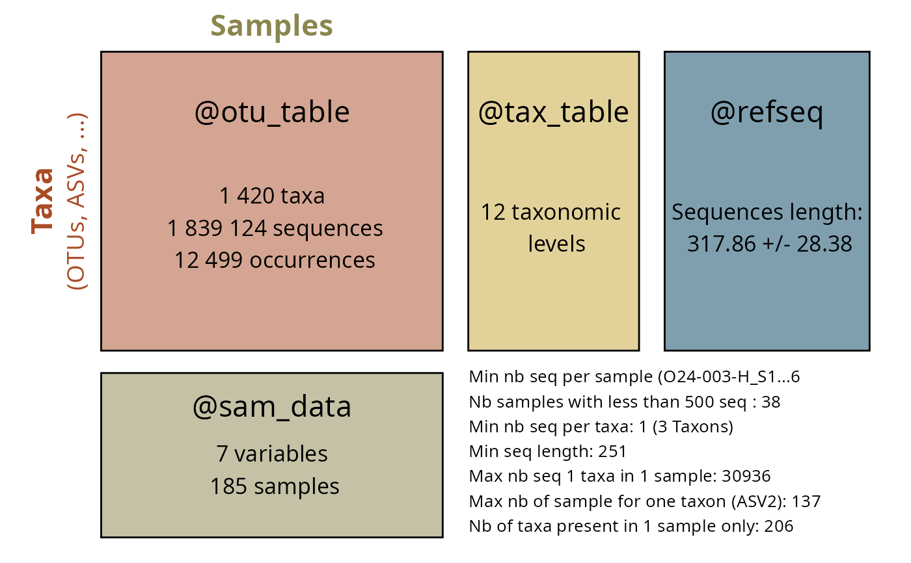

Recluster sequences of an object of class physeq or cluster a list of DNA sequences using vsearch software
Source: R/vsearch.R
vsearch_clustering.Rd
A wrapper of VSEARCH software.
Usage
vsearch_clustering(
physeq = NULL,
dna_seq = NULL,
nproc = 1,
id = 0.97,
vsearchpath = "vsearch",
tax_adjust = 0,
vsearch_cluster_method = "--cluster_size",
vsearch_args = "--strand both",
keep_temporary_files = FALSE
)Arguments
- physeq
(required): a
phyloseq-classobject obtained using thephyloseqpackage.- dna_seq
You may directly use a character vector of DNA sequences in place of physeq args. When physeq is set, dna sequences take the value of
physeq@refseq- nproc
(default: 1) Set to number of cpus/processors to use for the clustering
- id
(default: 0.97) level of identity to cluster
- vsearchpath
(default: vsearch) path to vsearch
- tax_adjust
(Default 0) See the man page of
merge_taxa_vec()for more details. To conserved the taxonomic rank of the most abundant ASV, set tax_adjust to 0 (default). For the moment only tax_adjust = 0 is robust- vsearch_cluster_method
(default: "–cluster_size) See other possible methods in the vsearch manual (e.g.
--cluster_sizeor--cluster_smallmem)--cluster_fast: Clusterize the fasta sequences in filename, automatically sort by decreasing sequence length beforehand.--cluster_size: Clusterize the fasta sequences in filename, automatically sort by decreasing sequence abundance beforehand.--cluster_smallmem: Clusterize the fasta sequences in filename without automatically modifying their order beforehand. Sequence are expected to be sorted by decreasing sequence length, unless –usersort is used. In that case you may setvsearch_argsto vsearch_args = "–strand both –usersort"
- vsearch_args
(default : "–strand both") a one length character element defining other parameters to passed on to vsearch.
- keep_temporary_files
(logical, default: FALSE) Do we keep temporary files ?
temp.fasta (refseq in fasta or dna_seq sequences)
cluster.fasta (centroid if method = "vsearch")
temp.uc (clusters if method = "vsearch")
Details
This function use the merge_taxa_vec() function to
merge taxa into clusters. By default tax_adjust = 0. See the man page
of merge_taxa_vec().
This function is mainly a wrapper of the work of others. Please cite vsearch.
References
VSEARCH can be downloaded from https://github.com/torognes/vsearch. More information in the associated publication https://pubmed.ncbi.nlm.nih.gov/27781170.
Examples
# \donttest{
summary_plot_pq(data_fungi)
#> Cleaning suppress 0 taxa and 0 samples.

d_vs <- vsearch_clustering(data_fungi)
summary_plot_pq(d_vs)
#> Cleaning suppress 0 taxa and 0 samples.
 # }
# }